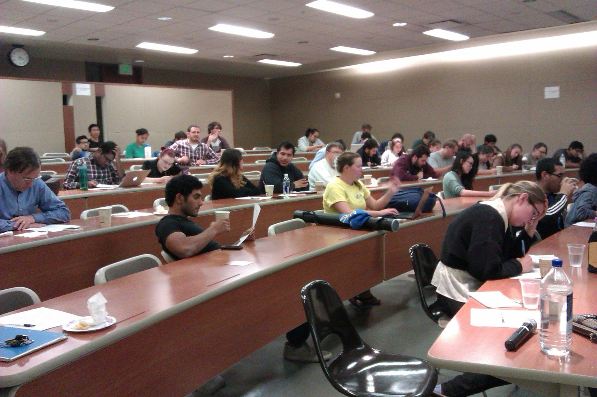

Women in Physical Sciences (WPS)
WPS is a club that seeks to create a supportive atmosphere for all undergrad women in physical sciences, engineering, and mathematics fields of study at UCLA.
Club Meetings
We meet once each month for lunch in the Physics and Astronomy Building (PAB).
You can join our Facebook group or follow us on Twitter to get updates for upcoming events.
To be added for mailing list, or for any other questions, free feel to email: uclawps@gmail.com.
Our regular monthly meetings are a lunch and provide a great opportunity to meet other women in physics, astronomy, geophysics, and other cool fields. We also work with the graduate Women in Physics club to find mentors and general advice about graduate school and careers in physics.
A casual lunch with other professional women in physics is a great chance to ask all those questions about the process of applying to graduate school and navigating the UCLA major without the usual panic attack (how can you panic when you're eating delicious free food?)
Events
In addition to hosting regular lunches, WPS organizes various other events throughout the school year, including an annual poster fair, workshops, CUWiP conference, social field trips, etc.
- Poster Fair
- Workshops
- CUWiP Conference
Each year we host a student poster fair where undergrads are welcome to present their research to their peers and professors. Traditionally, the WPS poster fair is held just before the UCLA Poster Day to allow undergraduates to practice their presentations.
All undergrads are welcome to participate to get feedback on their research or just stop by!

WPS reguarly collaborates with graduate women in physical sciences to host workshops on topics such as Imposter Syndrome and grad school applications.
The American Physical Society (APS) Conferences for Undergraduate Women in Physics (CUWiP) is a group of three-day regional conferences held simultaneously throughout the United States and Canada for undergraduate women interested in physics. The CUWiP conference is free to all accepted undergrad students, except for a $45 registration fee. The conference will cover the cost of lodging and meals.
Each year, WPS organizes a trip to the conference. This year, WPS is also actively helping to organize the 2017 Western region CUWiP , which will be held on January 13-15, 2017! Check out CUWiP@UCLA website for more info.
2016-2017 events:
About WPS
The undergrad Women in Physical Science club aims to create a supportive atmosphere for all women in physical science fields. We like to strike a balance between social and professional development through monthly lunches with professors and graduate students. Our lunches provide a platform for discussing problems faced by women in physical science fields and creating a network of support comprised of women at all stages in their careers.
Our club offers social and career development, including monthly lunches with professors, workshops to build research and presentation skills, and opportunities to attend conferences all dedicated to supporting women in sciences.
For any questions, feel free to contact us at uclawps@gmail.com. For updates, check out our social accounts:
Twitter
Facebook
2016-2017 Officers:
- President: Rupini Kamat
- Internal Vice President: Isabella Goetting
- External Vice President: Hayley Bricker
- Secretary: Liya Oster
- Treasurer: Scarlett Yu